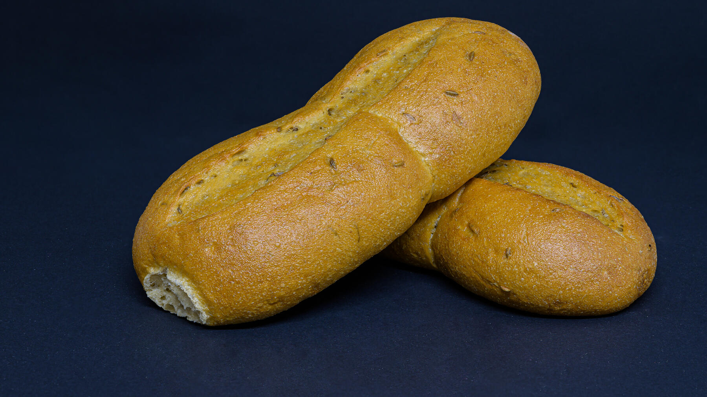

Zurück zur Übersicht
Wasserwecken
Knusprige ovale Brötchen, längs eingekerbt und mit Salzwasser bestrichen. Eine Portion entspricht einem Brötchen.
- Zeit
- 2 Std. 15 Min.
- Schwierigkeit
- mittel
- Kategorie
- Brot & Brötchen
- Ernährung
- vegan
Zutaten
Portionen
- 250 gWeizenmehl Type 405
- 250 gWeizenmehl Type 1050
- 1 PackungTrockenhefe
- 0,25 lWasser (etwa)
- 3 ELGutes Pflanzenöl
- 1 TLSalz
- 1 ELSalz, in ½ Tasse Wasser aufgelöst
- Fett und Mehl für das Blech
Zubereitung
- Die Mehle und die Hefe mischen.
- Das Wasser mit Öl und Salz lauwarm werden lassen, nach und nach zum Mehl gießen, zu einem glatten Teig verkneten und 8–10 Minuten kräftig durchkneten.
- Ovale Brötchen formen, auf ein gefettetes, bemehltes Blech legen und zugedeckt 60–90 Minuten gehen lassen.
- In jedes Brötchen längs eine breite Kerbe schneiden, mit dem Salzwasser bepinseln und im vorgeheizten Ofen bei 200 °C etwa 30 Minuten knusprig backen.
Meine Ergänzung: Temperatur 200 °C.